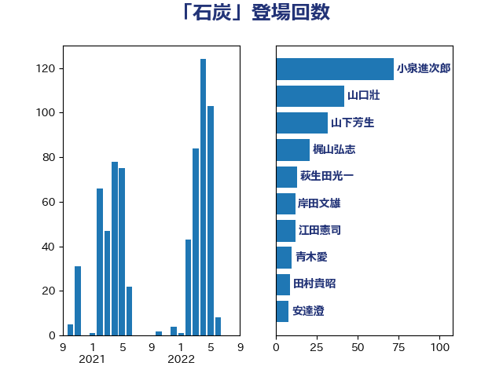

単語「石炭」

| 小泉進次郎 | 自由民主党 | 72 回 |
| 山口壯 | 自由民主党 | 42 回 |
| 山下芳生 | 日本共産党 | 32 回 |
| 梶山弘志 | 自由民主党 | 21 回 |
| 萩生田光一 | 自由民主党 | 13 回 |
| 岸田文雄 | 自由民主党 | 12 回 |
| 江田憲司 | 立憲民主党 | 12 回 |
| 青木愛 | 立憲民主党 | 10 回 |
| 田村貴昭 | 日本共産党 | 9 回 |
| 安達澄 | 無所属 | 8 回 |
| 空本誠喜 | 日本維新の会 | 8 回 |
| こやり隆史 | 自由民主党 | 6 回 |
| 岩渕友 | 日本共産党 | 6 回 |
| 細田健一 | 自由民主党 | 6 回 |
| 青山繁晴 | 自由民主党 | 6 回 |
| 岡田克也 | 立憲民主党 | 5 回 |
| 菅義偉 | 自由民主党 | 5 回 |
| 阿達雅志 | 自由民主党 | 5 回 |
| 小野田紀美 | 自由民主党 | 4 回 |
| 山添拓 | 日本共産党 | 4 回 |
| 早稲田ゆき | 立憲民主党 | 4 回 |
| 森本真治 | 立憲民主党 | 4 回 |
| 浜野喜史 | 国民民主党 | 4 回 |
| 滝波宏文 | 自由民主党 | 4 回 |
| 片山大介 | 日本維新の会 | 4 回 |
| 鈴木敦 | 国民民主党 | 4 回 |
| 井上哲士 | 日本共産党 | 3 回 |
| 佐藤啓 | 自由民主党 | 3 回 |
| 大串博志 | 立憲民主党 | 3 回 |
| 浜口誠 | 国民民主党 | 3 回 |
| 石川香織 | 立憲民主党 | 3 回 |
| 福山哲郎 | 立憲民主党 | 3 回 |
| 秋本真利 | 自由民主党 | 3 回 |
| 笠井亮 | 日本共産党 | 3 回 |
| 音喜多駿 | 日本維新の会 | 3 回 |
| 三浦信祐 | 公明党 | 2 回 |
| 上田清司 | 国民民主党 | 2 回 |
| 北村経夫 | 自由民主党 | 2 回 |
| 古賀友一郎 | 自由民主党 | 2 回 |
| 城井崇 | 立憲民主党 | 2 回 |
| 小山展弘 | 立憲民主党 | 2 回 |
| 小林鷹之 | 自由民主党 | 2 回 |
| 小野泰輔 | 日本維新の会 | 2 回 |
| 山田宏 | 自由民主党 | 2 回 |
| 斎藤アレックス | 国民民主党 | 2 回 |
| 本田太郎 | 自由民主党 | 2 回 |
| 林芳正 | 自由民主党 | 2 回 |
| 櫻井周 | 立憲民主党 | 2 回 |
| 河野義博 | 公明党 | 2 回 |
| 礒崎哲史 | 国民民主党 | 2 回 |
| 緑川貴士 | 立憲民主党 | 2 回 |
| 美延映夫 | 日本維新の会 | 2 回 |
| 茂木敏充 | 自由民主党 | 2 回 |
| 菅直人 | 立憲民主党 | 2 回 |
| 落合貴之 | 立憲民主党 | 2 回 |
| 藤巻健太 | 日本維新の会 | 2 回 |
| 赤木正幸 | 日本維新の会 | 2 回 |
| 足立敏之 | 自由民主党 | 2 回 |
| 鬼木誠 | 立憲民主党 | 2 回 |
| 上田英俊 | 自由民主党 | 1 回 |
| 住吉寛紀 | 日本維新の会 | 1 回 |
| 古賀之士 | 立憲民主党 | 1 回 |
| 吉田とも代 | 日本維新の会 | 1 回 |
| 吉良州司 | 無所属 | 1 回 |
| 塩田博昭 | 公明党 | 1 回 |
| 大塚耕平 | 国民民主党 | 1 回 |
| 大岡敏孝 | 自由民主党 | 1 回 |
| 大西健介 | 立憲民主党 | 1 回 |
| 宮口治子 | 立憲民主党 | 1 回 |
| 小池晃 | 日本共産党 | 1 回 |
| 小渕優子 | 自由民主党 | 1 回 |
| 山口晋 | 自由民主党 | 1 回 |
| 山崎誠 | 立憲民主党 | 1 回 |
| 岡本三成 | 公明党 | 1 回 |
| 岸真紀子 | 立憲民主党 | 1 回 |
| 川合孝典 | 国民民主党 | 1 回 |
| 平山佐知子 | 無所属 | 1 回 |
| 徳永エリ | 立憲民主党 | 1 回 |
| 杉田水脈 | 自由民主党 | 1 回 |
| 松野博一 | 自由民主党 | 1 回 |
| 柴田巧 | 日本維新の会 | 1 回 |
| 梅村聡 | 日本維新の会 | 1 回 |
| 森屋隆 | 立憲民主党 | 1 回 |
| 水岡俊一 | 立憲民主党 | 1 回 |
| 浅田均 | 日本維新の会 | 1 回 |
| 清水貴之 | 日本維新の会 | 1 回 |
| 源馬謙太郎 | 立憲民主党 | 1 回 |
| 牧原秀樹 | 自由民主党 | 1 回 |
| 玉木雄一郎 | 国民民主党 | 1 回 |
| 田嶋要 | 立憲民主党 | 1 回 |
| 田村まみ | 国民民主党 | 1 回 |
| 田村智子 | 日本共産党 | 1 回 |
| 神田潤一 | 自由民主党 | 1 回 |
| 稲津久 | 公明党 | 1 回 |
| 竹谷とし子 | 公明党 | 1 回 |
| 芳賀道也 | 国民民主党 | 1 回 |
| 荒井優 | 立憲民主党 | 1 回 |
| 角田秀穂 | 公明党 | 1 回 |
| 近藤和也 | 立憲民主党 | 1 回 |
| 近藤昭一 | 立憲民主党 | 1 回 |
| 重徳和彦 | 立憲民主党 | 1 回 |
| 鈴木俊一 | 自由民主党 | 1 回 |
| 関口昌一 | 自由民主党 | 1 回 |
| 高木かおり | 日本維新の会 | 1 回 |
| 麻生太郎 | 自由民主党 | 1 回 |